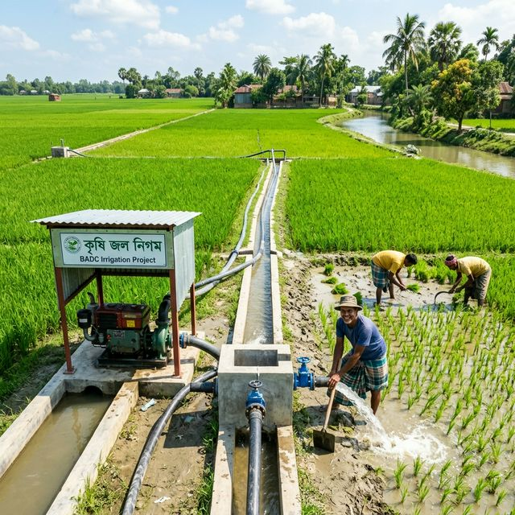
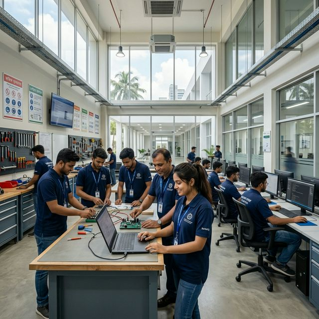
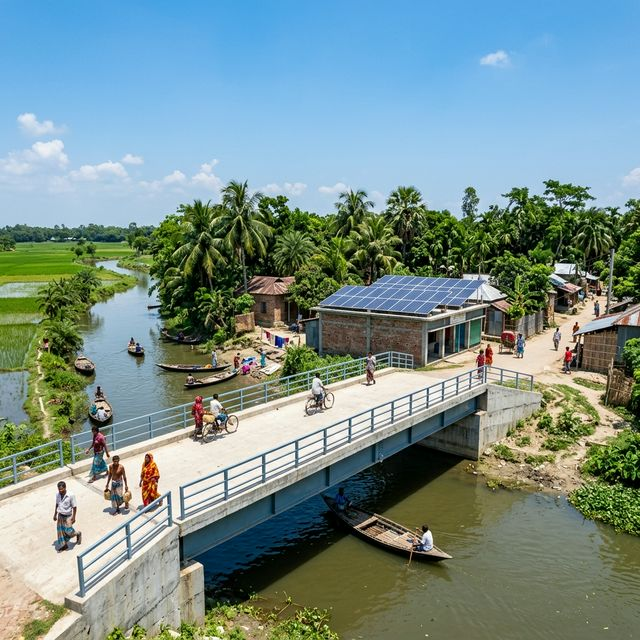

২৪ মার্চ, ২০২৬
তৃণমূল নেতাকর্মীদের সাথে মতবিনিময় সভা
শ্রীপুর উপজেলা বিএনপি কার্যালয়ে স্থানীয় নেতাকর্মীদের সাথে আগামী দিনের কর্মসূচি নিয়ে আলোচনা।
আরও পড়ুন →
বাংলাদেশ জাতীয়তাবাদী দলের (বিএনপি) একজন নিবেদিতপ্রাণ নেতা এবং গাজীপুরের মানুষের সেবক।
বিস্তারিত জানুনডা. এস এম রফিকুল ইসলাম (বাচ্চু) একজন বাংলাদেশী চিকিৎসক ও রাজনীতিবিদ। তিনি ১৯৬, গাজীপুর-০৩ (শ্রীপুর ও গাজীপুর সদর আংশিক) আসন থেকে নির্বাচিত ত্রয়োদশ জাতীয় সংসদের একজন গর্বিত সদস্য। গাজীপুর-৩ এর মানুষের সেবক হিসেবে তিনি শ্রীপুর, মাওনা, তেলিহাটী ও বরমী সহ পুরো এলাকায় উন্নয়নের রূপকার হিসেবে কাজ করছেন। বর্তমানে তিনি বাংলাদেশ জাতীয়তাবাদী দল (বিএনপি)-এর কেন্দ্রীয় নির্বাহী কমিটির সহ-স্বাস্থ্য বিষয়ক সম্পাদক ও গাজীপুর জেলা বিএনপির সিনিয়র যুগ্ম আহ্বায়ক হিসেবে দায়িত্ব পালন করছেন। ২০২৬ সালের ১২ ফেব্রুয়ারি অনুষ্ঠিত নির্বাচনে তিনি এই আসন থেকে বিপুল জনসমর্থনে বিজয়ী হন।
তাছাড়া তিনি ড্যাব (ডক্টরস অ্যাসোসিয়েশন অব বাংলাদেশ)-এর উপদেষ্টা হিসাবেও দায়িত্ব পালন করে আসছেন।
তিনি একজন বিশিষ্ট চিকিৎসক, যিনি চিকিৎসা সেবার পাশাপাশি জনকল্যাণে নিজেকে নিয়োজিত করেছেন।
গাজীপুরের সাধারণ মানুষের আর্থ-সামালিক উন্নয়ন ও অধিকার আদায়ের সংগ্রামে তিনি সবসময় সোচ্চার।
বিনয়ী ও সাহসী এই নেতা বিএনপি'র কেন্দ্রীয় কমিটির স্বাস্থ্য বিষয়ক সহ-সম্পাদক হিসেবেও দায়িত্ব পালন করছেন।
১৩তম জাতীয় সংসদ নির্বাচনে গাজীপুর-৩ আসনে বিপুল জনসমর্থনে বিজয়।
ত্রয়োদশ জাতীয় সংসদ নির্বাচনে তিনি ১৯৬, গাজীপুর-০৩ আসন থেকে বিপুল ব্যবধানে জয়লাভ করেন।
বিএনপির কেন্দ্রীয় কমিটির সহ-স্বাস্থ্য বিষয়ক সম্পাদক, ড্যাবের সিনিয়র যুগ্ম মহাসচিব ও সম্মলিত পেশাজীবী পরিষদের কেন্দ্রীয় আহবায়ক কমিটির সদস্য। পেশাগত জীবনে তিনি এনাম মেডিকেল কলেজের অধ্যাপক হিসেবে এবং পরপর চারবার নির্বাচিত বিএমএ-এর কেন্দ্রীয় প্রতিনিধি হিসেবে দায়ীত্ব পালন করছেন।
০১-১১ এর পর বিএনপির রাজনৈতিক দুঃসময়ে তিনি ড্যাবের ভারপ্রাপ্ত মহাসচিবের দায়ীত্ব পালন করেন ও শাহাবাগ থানা বিএনপির সাথে জড়িত হন। রাজনৈতিক প্রতিহিংসার কারনে ২০১০ সালের ২২শে ডিসেম্বর বিএসএমএমইউ (পিজি হাসপাতাল) হতে চাকুরীতুচ্য হন।
১৯৮৯ সালের ৬ই আগষ্ট ড্যাব প্রতিষ্ঠা করেন ও যুগ্ন মহাসচিব হিসেবে এর সম্প্রসারনে নিরলস কাজ করেন। পরবর্তীতে ১৯৯১ সাল হতে শ্রীপুর বিএনপির সাথে জড়িত হন ও দলের জন্য কাজ করেন।
১৯৮১ সালের ৩রা র্মাচ ছাত্রদলে যোগদানের মাধ্যমে রাজনীতিতে হাতেখড়ি। এরপর ১৯৮৫-৮৬ সালে ময়মনসিংহ মেডিকেল ছাত্রদলের এবং ১৯৮৬-৮৭ সালে বৃহত্তর ময়মনসিংহ জেলা ছাত্রদলের সেক্রেটারী হিসেবে দায়ীত্ব পালন করেন।
গাজীপুর-৩ আসনের (শ্রীপুর, মাওনা ও তেলিহাটী) মানুষের জীবনমান উন্নয়নে বাস্তবায়িত কিছু উল্লেখযোগ্য প্রকল্প।

তৃণমূল পর্যায়ে উন্নত স্বাস্থ্যসেবা পৌঁছে দিতে নতুন আধুনিক হাসপাতাল ভবন নির্মাণ।

এলাকার যাতায়াত ব্যবস্থা সহজ করতে নতুন প্রশস্ত রাস্তা ও কালভার্ট নির্মাণ।

শিক্ষার মান উন্নয়নে সরকারি প্রাথমিক ও উচ্চ বিদ্যালয়গুলোর নতুন ভবন এবং আধুনিক ক্লাসরুম।

কৃষকদের জীবনমান উন্নয়নে আধুনিক সেচ প্রকল্প ও উন্নত কৃষি সরঞ্জাম বিতরণ।

বেকারত্ব দূরীকরণে তরুণদের জন্য কারিগরি ও ভোকেশনাল ট্রেনিং সেন্টার স্থাপন।

গ্রামাঞ্চলে শতভাগ বিদ্যুতায়নসহ সোলার প্যানেল স্থাপন ও গ্রামীণ সেতু নির্মাণ।
ড. রফিকুল ইসলাম বাচ্চুর গুরুত্বপূর্ণ বক্তব্য এবং জনসভার ভিডিওগুলো দেখুন।
বর্তমান রাজনৈতিক প্রেক্ষাপট, ভবিষ্যৎ কর্মপন্থা ও গাজীপুরের উন্নয়ন নিয়ে বিশেষ আলোচনা।
তৃণমূল নেতাকর্মী ও সাধারণ মানুষের সাথে সরাসরি কথোপকথন।
অফিসিয়াল ফেসবুক পেইজ থেকে ড. রফিকুল ইসলাম বাচ্চুর সাম্প্রতিক মুহূর্ত।
সবাইকে পবিত্র ঈদের শুভেচ্ছা জানিয়ে ড. রফিকুল ইসলাম বাচ্চুর বিশেষ বার্তা।
ড. রফিকুল ইসলাম বাচ্চুর অফিসিয়াল ফেসবুক পেইজ থেকে সর্বশেষ বক্তব্য ও ভিডিও।
ড. রফিকুল ইসলাম বাচ্চুর সাম্প্রতিক রাজনৈতিক ও সামাজিক কর্মকাণ্ডের আপডেটসমূহ।
শ্রীপুর উপজেলা বিএনপি কার্যালয়ে স্থানীয় নেতাকর্মীদের সাথে আগামী দিনের কর্মসূচি নিয়ে আলোচনা।
আরও পড়ুন →কালিয়াকৈর এলাকার বন্যায় ক্ষতিগ্রস্ত পরিবারের মাঝে ব্যক্তিগত উদ্যোগে খাদ্য সামগ্রী বিতরণ।
আরও পড়ুন →নয়াপল্টনে বিএনপি'র কেন্দ্রীয় স্বাস্থ্য বিষয়ক উপ-কমিটির বিশেষ বৈঠকে অংশগ্রহণ।
আরও পড়ুন →ড. রফিকুল ইসলাম বাচ্চু এবং গাজীপুর-৩ এর উন্নয়ন নিয়ে কিছু সাধারণ প্রশ্ন ও উত্তর।
ড. এস. এম. রফিকুল ইসলাম বাচ্চু একজন বিশিষ্ট চিকিৎসক এবং গাজীপুর-৩ (শ্রীপুর ও গাজীপুর সদর) আসনের নির্বাচিত সংসদ সদস্য। তিনি বিএনপির কেন্দ্রীয় নির্বাহী কমিটির সহ-স্বাস্থ্য বিষয়ক সম্পাদক হিসেবেও দায়িত্ব পালন করছেন।
তার প্রধান লক্ষ্যগুলোর মধ্যে রয়েছে শ্রীপুর ও মাওনা এলাকায় আধুনিক স্বাস্থ্যসেবা নিশ্চিত করা, তেলিহাটী ও বরমী এলাকায় শিল্পায়ন ও কর্মসংস্থান তৈরি এবং পুরো গাজীপুর-৩ আসনে টেকসই যোগাযোগ ব্যবস্থা গড়ে তোলা।
হ্যাঁ, এই ওয়েবসাইটের "জনগণের সরাসরি যোগাযোগ" (Contact) ফরমের মাধ্যমে আপনি আপনার নাম ও মোবাইল নম্বর দিয়ে সরাসরি বার্তা পাঠাতে পারেন।
গাজীপুর-৩ আসনের বিভিন্ন স্থানে বাস্তবায়িত প্রকল্পগুলোর অবস্থান।
গাজীপুর-৩ আসনের উন্নিয়ন এবং আপনার যেকোনো সাহায্য বা পরামর্শের জন্য আমরা প্রস্তুত।